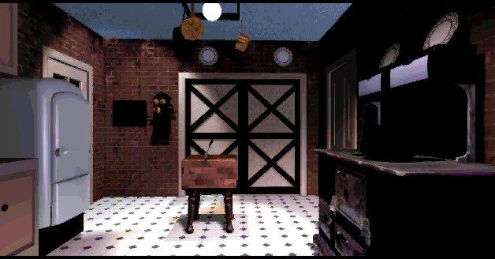
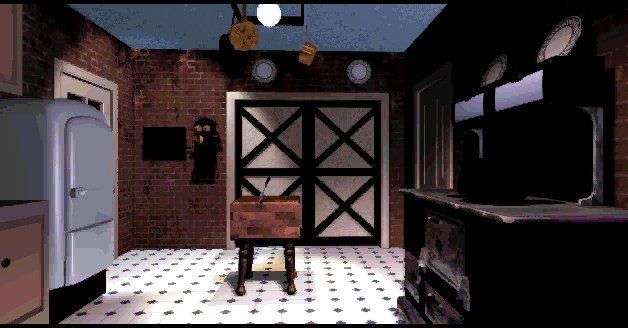
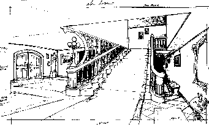
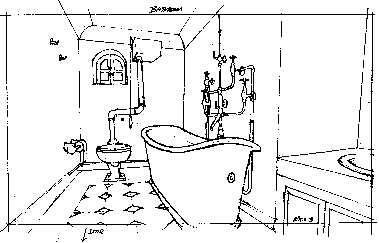
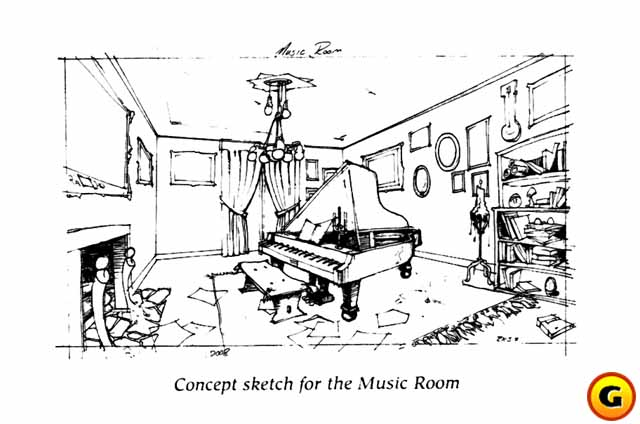

This bit is very exclusive and only to be found on this site. These sketches were made by the creators of the seventh guest. The first one is a sketch of the main hall. Take a look and see the changes. The third is a picture from the gamespot site.

This next scetch is one the bathroom.


Now we discuss some stuff that still remains a mystery after many years and stuff that can be
explained by me. For story-based questions, check out Dutton's room.
When you're upstairs in the hallway and you get a ghost encounter, for instance Mrs. Elinor Knox
and Hamilton Temple talk about their wishes. Pay attention to the lamp on your left, you
see a little dot disappearing and reappearing.
In the bedroom of the Knox's look into the mirror, when you go out the door, the lamp in the back disappears.
When the six guests arrive, you see Hamilton turning around quickly, like he heared something.
This is because in the original script the door was open and slammed shut right after Hamilton
entered.
When you walk about in the house, sometimes you go faster than other times, this is because of the different way in animating the creators used.
Who is that guy smoking a cigar in the gallery, the one with the cowboy hat I mean. That's
George Alistair Sanger, also known as the fat man, he made the music for the game, you can find
out more about this individual in the Music room.
What is Dutton scared of in the chapel? It's a flying gargoyle.
Who's bust is that on the piano in the music room? It's Beethoven's.
The front of the mansion is based on a true house. It's called the Nunan house. It's in Jacksonville, Oregon.
On one photo in the Dollroom you can see the house in the background.
Some of the weird paintings in the Playroom are done by a Dutch painter called Jeroen Bosch, he lived a couple
of hundred years ago. The painting in the Knox bedroom is called 'Nightmare' and was made by
Fuseli, the painting in the hallway upstairs, with the hands hehehehe, was made by Georges Innes
and I call it 'Handy' ahahaha...hmm.
The painting on the clavesimble in the Gallery is 'La grande Odalisque' van Ingres.
The painting with the satyr was made by Adolphe William Bouguerau. The painting of Stauf is originally 'The swing' by Fragonard. Without Stauf it looks like this.
What Stauf sings when you play his record in the music room is hard to hear. The lyrics are "Bone breaking in the night,
it's such a delight."
There are words above the little bed in the room inside the dollhouse. "Honor thy mother and father."
The picture on the right in Dutton's room looks like a portret of Edgar Allen Poe. But I can't say for certain. The picture on the left is on of Dutton himself.
The original plan was that the seventh guest was in black and white.
When you read the puzzle, with the blocks in the drawer, backwards you get the solution.
Why do the ghosts have a blue glow around them? Because they used a blue screen to blend the actors
with the background. They filmed them in front of a blue screen and later erased the blue color with the gamebackground.
The process is called 'Chromakey filming' or 'blue-screening'. The weathermen on tv use the same process to stand in front of
their weathermaps.
There wasn't really a software-tool that could erase the blue colors around the actors. So, lead artist Robert Stein III
had to erase each frame manually. He asked main programmer Graeme Devine for help. Devine programmed a tool that did most of
the erase work.
Why does the cursor 'chattering teeth' look like chattering teeth? The creators wanted every cursor to be parts of the human body, they ran out of body parts and chose teeth.
There's one password that you can use, it's the open house code.
You can visit any room and play any puzzle. Here's what you do:
When you see the menu on the board type very quickly Zaphod Beeblebrox. If you hear 'Groovy' then you typed fast enough.
Then click on one of the corners. You now see a screen with all the rooms. Click on the rooms and there you are. Zaphod Beeblebrox is the name of a character in 'the hitchhikers guide to the galaxy' written by Douglas Adams. The password is
probably chosen by Graeme Devine since he uses it as a nickname.
I would like to thank Rusel deMaria, his guide to the mansion was very helpful.
I can recommend the novel by Matthew J. Costello, 'the seventh guest'.
If you want to go to the crypt, click here.